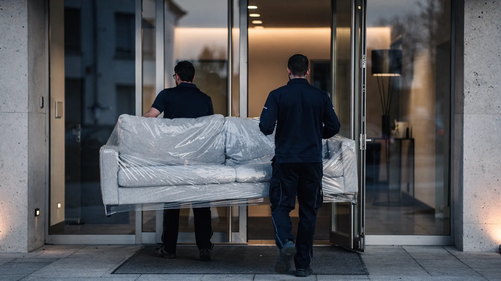

Umzug von und nach Zürich
Viele Umzüge verbinden den Aargau mit Zürich: in die Stadt wegen der Arbeit, hinaus ins Grüne wegen der Familie. ZÜGELKLAR plant solche Umzüge von Mellingen aus – mit besonderem Augenmerk auf das, was in der grössten Stadt der Schweiz am meisten Zeit kostet: Zufahrt und Parkierung.

SymbolbildIn der Stadt entscheidet die Logistik
In Zürich sind Strassen oft dicht befahren und Parkplätze knapp, in älteren Quartieren sind die Gassen zudem eng. Ein Umzug steht und fällt deshalb mit der Frage, wo das Fahrzeug während des Ein- oder Ausladens stehen kann. Ein langer Trageweg oder ein Fahrzeug, das umparkiert werden muss, kostet Zeit.
Darum klären wir vor der Offerte genau: Adresse, Zufahrt, Distanz zum Eingang, Treppenhaus, Lift und allfällige Innenhöfe. Fotos des Hauseingangs und der Strasse per WhatsApp an 079 933 31 11 helfen dabei.
Auch die Zeit spielt eine Rolle: Die Strecke zwischen dem Aargau und Zürich ist je nach Tageszeit unterschiedlich stark befahren. Wir planen das Zeitfenster realistisch und informieren Sie, falls es wegen Verkehr zu Verzögerungen kommt. Wer an beiden Adressen enge Verhältnisse hat, sollte das bei der Anfrage angeben, damit Personal und Ablauf darauf abgestimmt werden.
Typische Strecken zwischen Aargau und Zürich
Manche ziehen aus Zürich in den Aargau, andere vom Aargau in die Stadt. Wir planen beide Richtungen.
Bei einem Umzug aus der Stadt in den Aargau ändern sich oft auch die Verhältnisse: von der Altbauwohnung ohne Lift ins Haus mit Garage. Beide Adressen fliessen gleichwertig in die Planung ein.
- Zürich → Baden, Wettingen oder Mellingen
- Brugg, Lenzburg oder Aarau → Zürich
- Umzug innerhalb des Raums Zürich
- Stadtwohnung abgeben: Umzug plus Umzugsreinigung mit Abnahmegarantie
- Möbeldemontage für schmale Treppenhäuser in Altbauten
Abgabe der Stadtwohnung ohne zweite Firma
Wer eine Mietwohnung in Zürich abgibt, kann Umzug und Umzugsreinigung kombinieren. Bei gebuchter Abnahmegarantie bessern wir berechtigte Beanstandungen der Verwaltung kostenlos nach – im vereinbarten Leistungsumfang. Die Abgabe sollte grundsätzlich innert drei Arbeitstagen nach der Reinigung stattfinden.
ZÜGELKLAR unterhält keine Filiale in Zürich. Der Raum Zürich ist ein Einsatzgebiet, das wir von unserer Basis in Mellingen aus bedienen.
Halteverbot und Parkierung in Zürich
Gemäss Website der Stadt Zürich können Parkplätze für Umzüge bei der Stadtpolizei über das Online-«Reservationsformular Parkplätze für Umzüge und weiteres» reserviert werden. Für Parkflächen der Blauen Zone gilt eine Vorlaufzeit von mindestens sieben Arbeitstagen, für Parkfelder der Weissen Zone mindestens drei Arbeitstage. Die Auftragsbestätigung erhalten Sie laut Stadt in der Regel innerhalb von zwei Arbeitstagen.
Die Kosten richten sich nach Zeit, Ort sowie Art und Anzahl der Parkfelder. Für ein bis zwei aneinandergrenzende Parkfelder während maximal eines Tages nennt die Stadt CHF 120.– bis 170.–. Reserviert wird nur, wenn dies zwingend notwendig ist; sind die gewünschten Felder nicht verfügbar, kann die nächstmögliche Alternative reserviert werden. Grundsätzlich organisiert der Kunde die Reservation; geben Sie das Thema am besten gleich bei der Anfrage an. Auf Wunsch kann ZÜGELKLAR die Reservation für Sie organisieren; die Gebühren der Stadt werden separat verrechnet und in der Offerte ausgewiesen.
- Blaue Zone: mindestens 7 Arbeitstage Vorlauf
- Weisse Zone: mindestens 3 Arbeitstage Vorlauf
- Maximal 14 Tage reservierbar; längere Bedürfnisse über die Verwaltungspolizei
- Über die Festtage: Tafelaufträge mit Gültigkeit 24. Dezember 2026 bis 8. Januar 2027 bis spätestens 17. Dezember 2026 einreichen
Ummelden und Entsorgen in Zürich
Gemäss Stadt Zürich müssen Sie Zuzug oder Wohnungswechsel innerhalb von 14 Tagen beim Personenmeldeamt melden. Bei einem Zuzug aus einer anderen Schweizer Gemeinde ist die Meldung über eumzug.swiss möglich, sofern die bisherige Gemeinde an eUmzugCH teilnimmt. Die Anmeldegebühr beträgt laut Stadt CHF 40 pro erwachsene Person. Ab 2. November 2026 befindet sich das Personenmeldeamt West an der Hardstrasse 41.
Sperrgut holt Entsorgung + Recycling Zürich (ERZ) gegen Bezahlung ab. Bestellt wird telefonisch beim ERZ Service Center, empfohlen sind drei Arbeitstage Vorlauf. Das Material muss am Abholtag vor 7 Uhr gut sichtbar vor dem Gebäude stehen; Stücke dürfen höchstens 2,5 m lang und 40 kg schwer sein (Sofas maximal 2 m). Kostenlos ist der Mobile Recyclinghof im Quartier, der zu Fuss, per Velo oder ÖV genutzt werden kann. Mit dem Auto nennt die Stadt die Recyclinghöfe Looächer und Werdhölzli.
- Provisorische Parkkarte beim Wohnungswechsel: CHF 15, 45 Tage gültig
- Späte Änderungen an einer ERZ-Abholung kosten CHF 86.50
Häufige Fragen
Was passiert, wenn am Umzugstag in Zürich kein Parkplatz frei ist?
Lange Tragewege, Umparkieren oder Wartezeiten verursachen Zusatzaufwand. Deshalb empfehlen wir, eine Halteverbotszone frühzeitig zu organisieren oder durch uns organisieren zu lassen.
Planen Sie auch Umzüge innerhalb der Stadt Zürich?
Ja. Der Raum Zürich gehört zu unserem Einsatzgebiet, auch für Umzüge innerhalb der Stadt.
Wie gehen Sie mit engen Innenhöfen oder Durchgängen um?
Wir klären Zugang und Durchgangsmasse vorab, am besten anhand von Fotos. Sperrige Möbel werden bei Bedarf demontiert und am neuen Ort wieder aufgebaut.
Wie früh muss ich in Zürich einen Parkplatz für den Umzug reservieren?
Gemäss Website der Stadt Zürich gilt für Parkflächen der Blauen Zone eine Vorlaufzeit von mindestens sieben Arbeitstagen und für die Weisse Zone von mindestens drei Arbeitstagen. Die Reservation erfolgt online über das Formular der Stadtpolizei.
Wie entsorge ich in Zürich Sperrgut beim Umzug?
Gemäss Stadt Zürich können Sie Sperrgut kostenlos zum Mobilen Recyclinghof bringen (ohne Auto) oder die kostenpflichtige Abholung bei Entsorgung + Recycling Zürich telefonisch bestellen, idealerweise drei Arbeitstage im Voraus. Mit dem Auto stehen die Recyclinghöfe Looächer und Werdhölzli zur Verfügung.
Quellen
Stand: Oktober 2026. Ohne Gewähr – massgebend sind die aktuellen Angaben der zuständigen Stellen.
- Stadt Zürich – Parkplatzreservation (Stadtpolizei)
- Stadt Zürich – Tagesbewilligungen
- Stadt Zürich – Wohnungswechsel innerhalb der Stadt Zürich
- Stadt Zürich – Zuzug in die Stadt Zürich (innerhalb der Schweiz)
- Stadt Zürich – Sperrgut
- Stadt Zürich – Abfuhr Sperrgut, Metall, Elektrogeräte und Grubengut
- Stadt Zürich – Mobiler Recyclinghof im Quartier
Umzüge in der Nähe
Von Mellingen aus fahren wir auch regelmässig in die Nachbarorte: